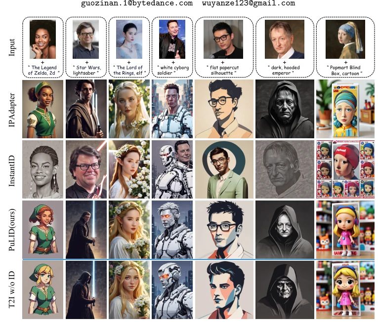
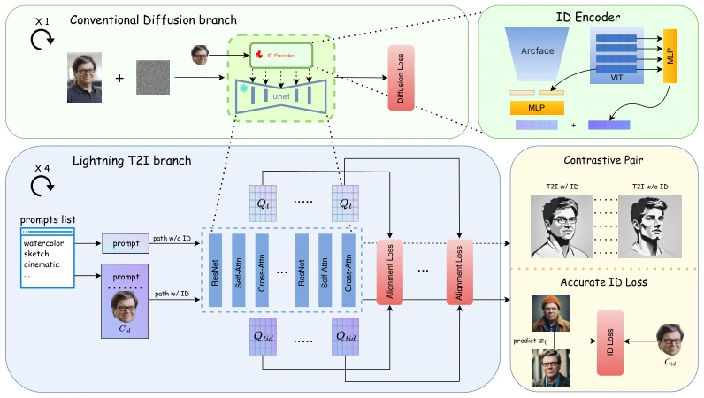
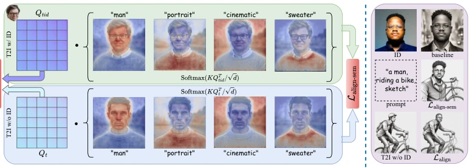
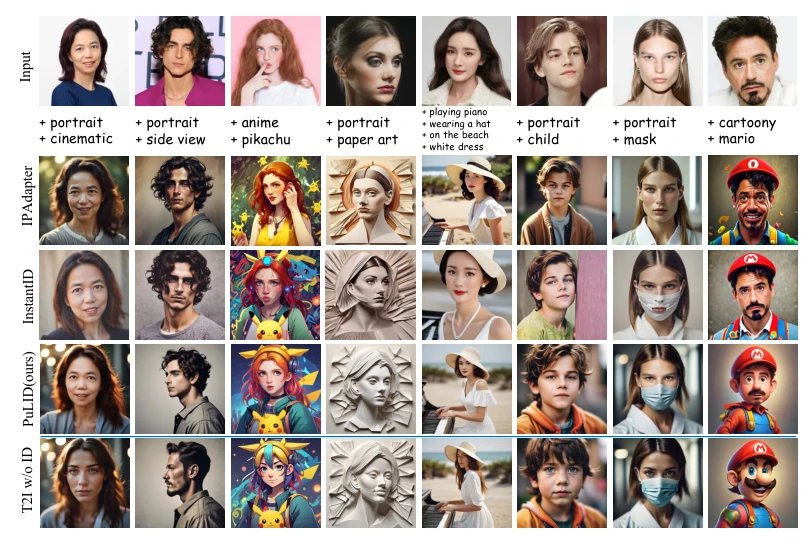
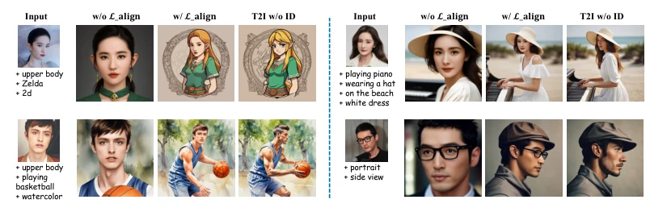
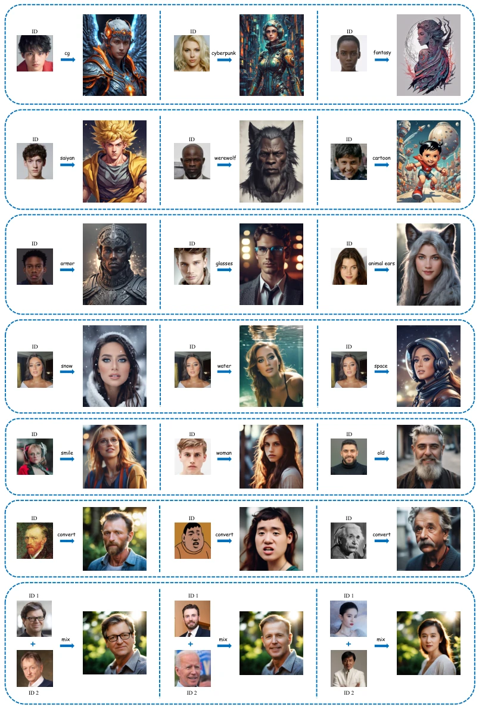
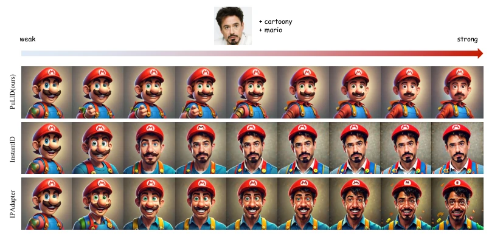
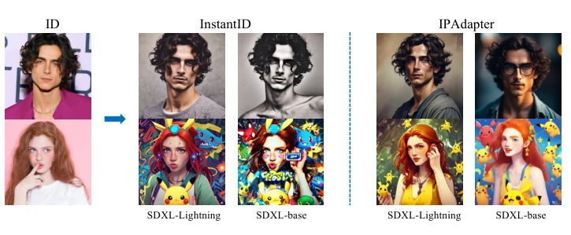
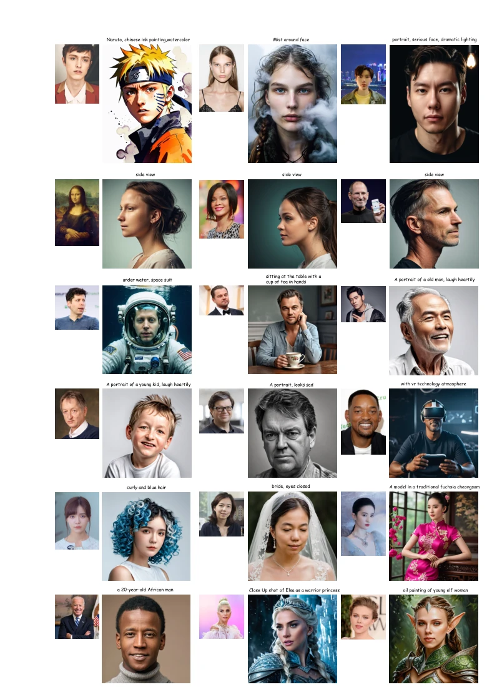
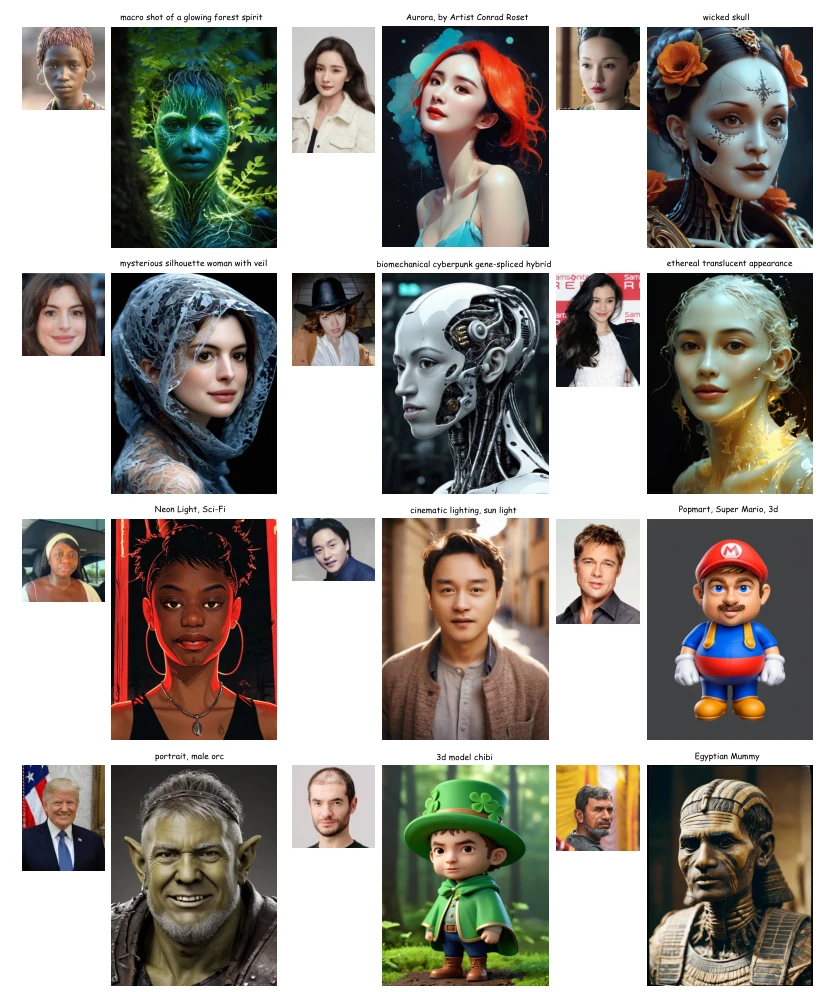

PuLID: Pure and Lightning ID Customization via Contrastive Alignment
Zinan Guo, Yanze Wu, Zhuowei Chen, Lang Chen, Qian He abspdf
论文点评Review
PuLID 这名字起得挺响亮，Pure and Lightning，听着就很快很纯。实际上它确实解决了 ID 定制里“既要又要”的难题：既要脸像，又要风格不乱。现有的调参派（如 Dreambooth [36]）慢得像蜗牛，免调参派（如 IPAdapter [50]）又容易把原模型的风格带偏。PuLID 搞了个双分支训练，用 Lightning 加速采样来算更准的 ID loss，再用对比对齐防止污染。不过，训练变慢了，显存也吃紧，而且人脸偶尔会糊，这算是“闪电”带来的副作用吧。总的来说，在保持原模型行为一致性上做得不错，但“纯”度还得看具体场景，别指望它能完美解决所有风格迁移问题，毕竟没有免费的午餐。
The name PuLID is quite striking, Pure and Lightning, sounding fast and pure. In fact, it indeed solves the "have it both ways" dilemma in ID customization: wanting face likeness while keeping style intact. Existing tuning-based methods (such as Dreambooth [36]) are as slow as snails, while tuning-free methods (such as IPAdapter [50]) tend to skew the original model's style. PuLID adopts a dual-branch training, using Lightning accelerated sampling to calculate a more accurate ID loss, and uses contrastive alignment to prevent contamination. However, training becomes slower, VRAM usage is demanding, and faces occasionally become blurry, which can be considered a side effect brought by "Lightning". Overall, it performs well in maintaining original model behavior consistency, but the "purity" depends on specific scenarios, do not expect it to perfectly solve all style transfer problems, after all, there is no free lunch.
研究动机Motivation
个性化图像生成里，ID 定制是个老难题。调参方法 [7, 36] 虽然效果好，但每个 ID 都要微调几十分钟，成本太高。免调参方法 [44, 50] 虽然快，但有个致命伤：插入 ID 信息会污染原模型。比如 IPAdapter [50] 和 InstantID [44]，为了保 ID 相似度，往往牺牲了背景、光影和构图的一致性，导致风格降级。而且，现有的 ID loss 计算往往基于去噪中途的 noisy x0，导致优化不准。我们需要一种既能高保真嵌入 ID，又不破坏原模型 prompt 遵循能力和风格表现的方法。这就是 PuLID 想解决的痛点：如何在免微调的前提下，实现“纯净”的 ID 插入，避免模型行为被 ID 信息干扰。
In personalized image generation, ID customization is a long-standing challenge. Tuning methods [7, 36], although effective, require fine-tuning for dozens of minutes for each ID, which is too costly. Tuning-free methods [44, 50] are fast, but have a fatal flaw: inserting ID information contaminates the original model. For example, IPAdapter [50] and InstantID [44], to maintain ID similarity, often sacrifice consistency in background, lighting, and composition, leading to style degradation. Moreover, existing ID loss calculations are often based on noisy x0 during denoising, leading to inaccurate optimization. We need a method that can embed ID with high fidelity without destroying the original model's prompt adherence and style performance. This is the pain point PuLID wants to solve: how to achieve "pure" ID insertion without fine-tuning, avoiding model behavior being interfered by ID information.

Figure 1: We introduce PuLID, a tuning-free ID customization approach. PuLID maintains high ID fidelity while effectively reducing interference with the original model’s behavior.
方法Method
整体框架是双分支并行。上分支是常规扩散训练，下分支是 Lightning T2I 分支。常规分支负责维持基础生成能力。Lightning 分支利用 SDXL-Lightning [23] 技术，仅用 4 步就从纯噪声生成高质量图像。核心创新在于两个 Loss：一是对比对齐损失 (Contrastive Alignment Loss)。构建一对路径，一个有 ID 条件，一个无 ID 条件，但 Prompt 和初始噪声相同。通过计算 UNet 特征（特别是 Cross-Attention 层）的语义和布局对齐，强制模型学习“只改脸，不改风格”的插入方式。二是高精度 ID Loss。因为 Lightning 分支能生成接近真实分布的 x0，可以直接用 ArcFace [6] 计算 ID 相似度 Loss，比传统单步预测 x0 更准。训练分三阶段：先训扩散，再加 ID Loss，最后加对齐 Loss 微调。这样既保证了 ID 相似度，又通过约束防止了模型行为被污染。
The overall framework is dual-branch parallel. The upper branch is regular diffusion training, the lower branch is Lightning T2I branch. The regular branch is responsible for maintaining basic generation capabilities. The Lightning branch utilizes SDXL-Lightning [23] technology, generating high-quality images from pure noise in just 4 steps. The core innovation lies in two Losses: one is Contrastive Alignment Loss. A pair of paths is constructed, one with ID condition, one without ID condition, but Prompt and initial noise are the same. By calculating the semantic and layout alignment of UNet features (especially Cross-Attention layers), forcing the model to learn the "change face only, do not change style" insertion method. The second is High-precision ID Loss. Because the Lightning branch can generate x0 close to the true distribution, ID similarity Loss can be calculated directly using ArcFace [6], which is more accurate than traditional single-step prediction x0. Training is divided into three stages: first train diffusion, then add ID Loss, finally add Alignment Loss for fine-tuning. This ensures ID similarity and prevents model behavior from being contaminated through constraints.

Figure 2: Overview of PuLID framework. The upper half of the framework illustrates the con- ventional diffusion training process. The face extracted from the same image is employed as the ID condition Cid. The lower half of the framework demonstrates the Lightning T2I training branch introduced in this study. It leverages the recent fast sampling methods to iteratively denoise from pure noise to high-quality images in a few steps (4 in this paper). In this branch, we construct contrastive paths with and without ID injection and introduce an alignment loss to instruct the model on how to insert ID condition without disrupting the original model’s behavior. As this branch can produce photo-realistic images, it implies that we can achieve a more accurate ID loss for optimization.

Figure 3: Illustration and Effect of the alignment loss.
实验Experiments
实验用了 DivID-120 和 Unsplash-50 数据集。基线选了 PhotoMaker [22]、IPAdapter [50] 和 InstantID [44]。指标包括 Face Sim（ID 相似度）、CLIP-T（Prompt 遵循）和 CLIP-I（插入前后图像元素一致性）。结果显示 PuLID 在三项指标上均 SOTA，特别是 CLIP-I 显著高于竞品（0.812 vs 0.703），说明风格破坏最小。消融实验证明，没有对齐 Loss 会导致布局崩塌和风格丢失；使用 Lightning 分支计算的 ID Loss 比传统 naive loss 效果更好。不过，训练速度比常规扩散慢，显存占用更高。此外，虽然 ID 保真度高，但人脸偶尔会出现模糊，可能是 ID Loss 优化带来的副作用。
Experiments used DivID-120 and Unsplash-50 datasets. Baselines selected PhotoMaker [22], IPAdapter [50], and InstantID [44]. Metrics include Face Sim (ID similarity), CLIP-T (Prompt adherence), and CLIP-I (image element consistency before and after insertion). Results show PuLID is SOTA on all three metrics, especially CLIP-I significantly higher than competitors (0.812 vs 0.703), indicating minimal style destruction. Ablation experiments prove that the absence of Alignment Loss leads to layout collapse and style loss; using Lightning branch calculated ID Loss performs better than traditional naive loss. However, training speed is slower than regular diffusion, VRAM usage is higher. Additionally, although ID fidelity is high, faces occasionally appear blurry, possibly a side effect brought by ID Loss optimization.

Figure 4: Qualitative comparisons. T2I w/o ID represents the output generated by the original T2I model without inserting ID, which reflects the behavior of the original model. Our PuLID achieves higher ID fidelity while causing less disruption to the original model. As the disruption to the model is reduced, results generated by PuLID accurately reproduce the lighting (1st row), style (4th row), and even layout (5th row) of the original model. This unique advantage broadens the scope for a more flexible application of PuLID.

Figure 5: Qualitative comparison for ablation study on alignment loss.

Figure 6: More applications. Including style changes, IP fusion, accessory modification, recon- textualization, attribute editing, transformation from non-photo-realistic domain to photo-realistic domain, and ID mixing. Note that all these high-quality images are generated in just 4 steps with SDXL-Lightning model, without the need for additional Lora.
其他图片Other Figures

Figure 7: Results under different ID weights. The weights incrementally increase from left to right, culminating at the chosen weight at the far right.

Figure 8: Visual comparison of different base model for InstantID and IPAdapter.

Figure 9: PuLID with RealVis-XL as base model. Zoom in for best view

Figure 10: PuLID with Juggernaut-XL-Lightning as base model. Zoom in for best view